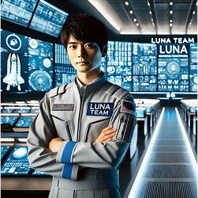
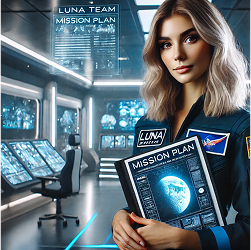
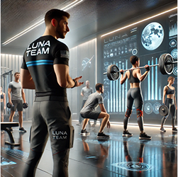
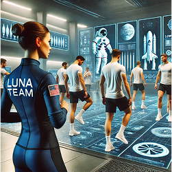
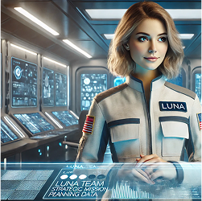
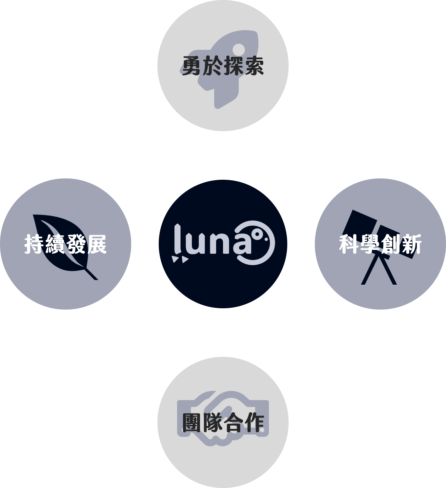
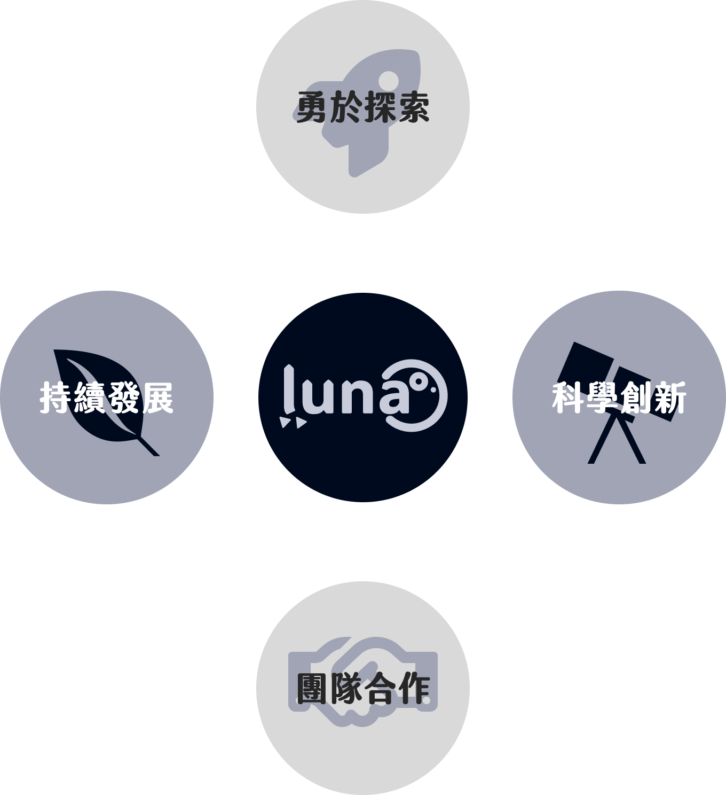
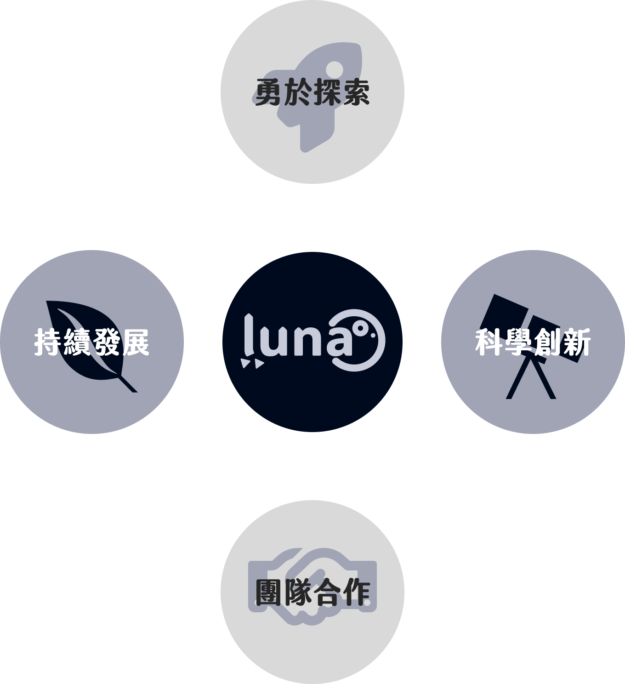

About
Luna Plan
Luna Dreams
Planet News
About
探索無限 拓展未來
Luna Verse 是一支致力於推動人類探索月球與天體的組織團隊
我們相信，登月不再只是遙不可及的夢想，而是一個等待被理解、開拓的新世界
透過科學、技術與創新，我們為探索者打造通往月球的道路，讓每一位夢想家都能親身體驗星際冒險
我們的使命
打造前所未有的太空探索體驗
讓普通人也能親身參與登月計畫
推動科技創新，突破航天極限
透過 AI、自動化與太空工程實現安全可行的登月方案
建立月球基地，探索宇宙奧秘
以月球為立基點重新觀測宇宙，開啟星際文明的可能
促進國際合作，共同迎接太空時代
連結各國航天機構與科研機構，共享科技進步
核心團隊

指揮與管理部門
總指揮官：佐藤隆一（Ryuichi Sato）
統籌計畫運作，確保各部門資源分配與決策的精確執行
制定 Luna 計畫的發展策略與方向
管理跨國合作與資源分配
監督所有部門的執行進度與成果
危機處理與風險評估
協調各國政府與航天機構的合作
科學研究與探索部
首席科學家：艾瑪·卡特（Emma Carter）
研究月球環境、資源及天文現象，為人類的天體探索提供科學依據
研究月球地質、礦物資源與可利用性
開發太空生存能源與未來居住計畫
進行天體探索與望遠鏡觀測
與全球科研機構合作，分享研究成果


太空訓練與人員培育部
訓練總監：伊凡·彼得羅夫（Ivan Petrov）
培養具備專業知識與高適應能力的宇航員，確保其勝任極端環境下的各種挑戰
設計宇航員體能與心理適應訓練計畫
執行模擬登月與應急操作測試
提供航天器操作與科學實驗相關技能訓練
研究並優化人類在太空長期生活的生存策略
推動大眾航天教育與未來宇航員培育計畫
碳基實驗與醫療部
醫學總監：路易斯·加西亞（Luis García）
研究碳基生物處外太空環境的適應性，並探索生存的可能
研究碳基生物在微重力與天體輻射環境下的變化
開發適應月球環境的農業技術，測試植物生長條件
設計並執行宇航員健康維護與醫療支持計畫
提供登月前後的身心復健計畫，確保宇航員長期適應性


航天工程與通訊數據部
首席工程師：艾莉森·克羅弗特（Allison Croft）
開發航天技術，確保航天器安全、通訊暢通，維護月球基地的建設
設計與優化 Luna 航天器及登月設備
研發天體通訊技術與高效數據傳輸系統
建設並維護月球基地的基礎設施與能源管理
研究新一代航天推進技術，提升星際旅行效率
我們的價值觀
人類的好奇心與挑戰精神是推動文明進步的核心
Luna Verse
結合全球科學家、工程師、航天專家，共同實現登月夢想

以長遠視角規劃，確保太空資源的有效利用與環境保護
以科技為核心，持續突破工程與物理的限制，讓登月成為現實
加入我們 一同啟航
Luna 不僅是一個計畫，更是一場屬於全人類的夢想實現之旅
我們邀請你一起見證歷史
以月球為立足點，窺探這宇宙的部分面貌
為未來世代開啟無限的可能
加入 Luna 團隊
 
